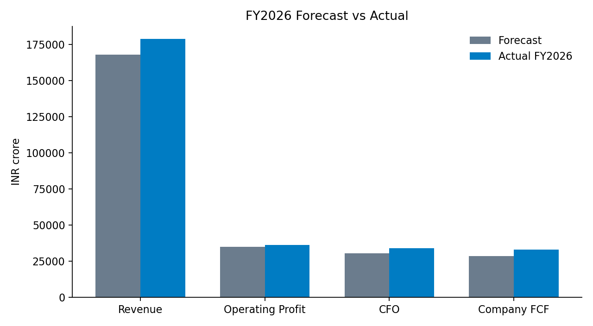
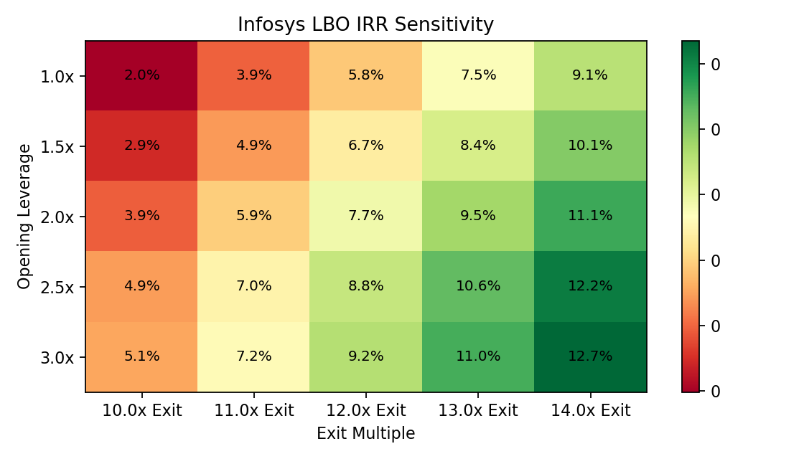

Infosys DCF and 3-statement LBO analysis
Cash quality is strong. Entry valuation does most of the damage.
FY2025 free cash flow supports the asset quality case, but the DCF and LBO both show limited upside unless growth accelerates or entry multiple pressure eases.
Revenue and cash flow beat the model. The model was not retuned.
The valuation model uses FY2025 as the last actual year. Infosys has since reported FY2026 actuals, which are used here only to audit the forecast, not to set model assumptions.
Actual INR 178,650 crore vs forecast INR 167,880 crore.
20.3% actual vs 20.8% forecast, affected by the Labour Codes provision.
21.0% adjusted actual vs 20.8% forecast.
Actual INR 33,097 crore vs forecast INR 28,452 crore.

Terminal value drives most of the equity value.
Base WACC is 10.0%, terminal growth is 3.0%, and net cash is added after enterprise value.
Low growth, stable margins, cash conversion intact.
The business delevers quickly, but the equity check is heavy.
Opening leverage is 2.0x FY2025 EBITDA with an 80% cash sweep and 8.5% cash interest.
Exit multiple and WACC are the pressure points.
| Debt / EBITDA | 10.0x Exit | 11.0x Exit | 12.0x Exit | 13.0x Exit | 14.0x Exit |
|---|---|---|---|---|---|
| 1.0x | 2.0% | 3.9% | 5.8% | 7.5% | 9.1% |
| 1.5x | 2.9% | 4.9% | 6.7% | 8.4% | 10.1% |
| 2.0x | 3.9% | 5.9% | 7.7% | 9.5% | 11.1% |
| 2.5x | 4.9% | 7.0% | 8.8% | 10.6% | 12.2% |
| 3.0x | 5.1% | 7.2% | 9.2% | 11.0% | 12.7% |
| Terminal growth | 8.5% WACC | 9.5% WACC | 10.0% WACC | 10.5% WACC | 11.0% WACC | 11.5% WACC |
|---|---|---|---|---|---|---|
| 2.0% | 1,245 | 1,088 | 1,025 | 969 | 919 | 874 |
| 2.5% | 1,321 | 1,143 | 1,072 | 1,010 | 955 | 906 |
| 3.0% | 1,412 | 1,206 | 1,126 | 1,056 | 995 | 941 |
| 3.5% | 1,520 | 1,280 | 1,188 | 1,109 | 1,040 | 980 |
| 4.0% | 1,653 | 1,367 | 1,260 | 1,170 | 1,092 | 1,025 |

Quality asset, muted sponsor economics.
Infosys has the characteristics lenders like: scale, recurring client relationships, high conversion, and net cash. The issue is not operating fragility; it is valuation discipline.
- 01 Client discretionary spend delays growth recovery.
- 02 AI-led pricing pressure outruns delivery automation savings.
- 03 Exit multiple compression absorbs deleveraging gains.
- 04 INR/USD movement distorts growth and margin translation.